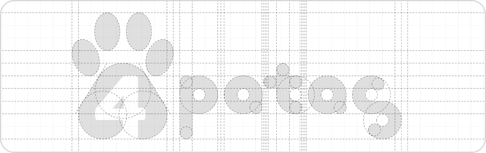
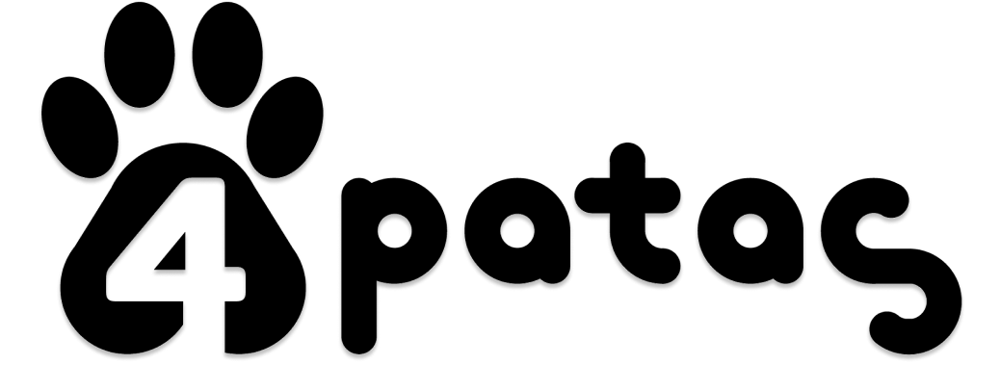
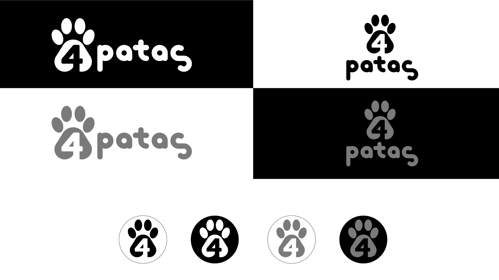

Malha de Construção
Símbolo
Representa a empatia, o amor, o carinho e o zelo que nós temos com os pets acolhidos.
Representa o equilíbrio que nós temos como uma associação, em relação a gestão de recursos e administração em si.
Representa a paixão que nós temos pela causa animal e o quanto estamos dispostos a batalhar por ela.
Logo
 Esse é o design proposto para nossa marca, trazendo uma grande padronização entre os elementos e conceitos e o símbolo, como já mostrado acima. Com a letra "S" alinhada com a letra "P", e também pela dinamicidade que transmite por causa de suas circunferências, ela se transforma em uma representação de um rabinho de gato e o símbolo é a representação da pata de um cachorro, assim conseguimos trazer na nossa logo os dois tipos de animais que cuidamos e acolhemos.
Cores
RGB 255, 161, 36
#FFA124 Otimismo/Alegria
RGB 91, 68, 53
#5B4435
RGB 191, 156, 109
#BF9C6D
RGB 118, 86, 42
#76562A Acolhimento
Nossa paleta de cores tem como cor predominante o laranja, que traz um ar de otimismo, alegria e, nesse tom um pouco pastel, também representa um pouco de carinho e fofura. Além disso, nós escolhemos o laranja pelo fato de o Abril Laranja ser o mês de prevenção contra a crueldade animal, fortalecendo a ligação com a nossa identidade e nossos valores. Junto ao laranja, temos o marrom. Ele foi escolhido aqui porque a combinação dessas duas cores transmite a sensação de acolhimento, e essas outras duas também são tons de marrom e vêm para representar a variação de cores dos pelos dos nossos bichinhos.
Tipografia